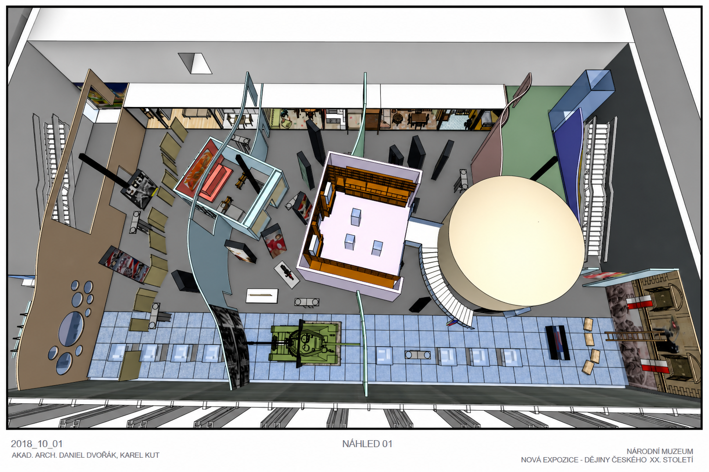
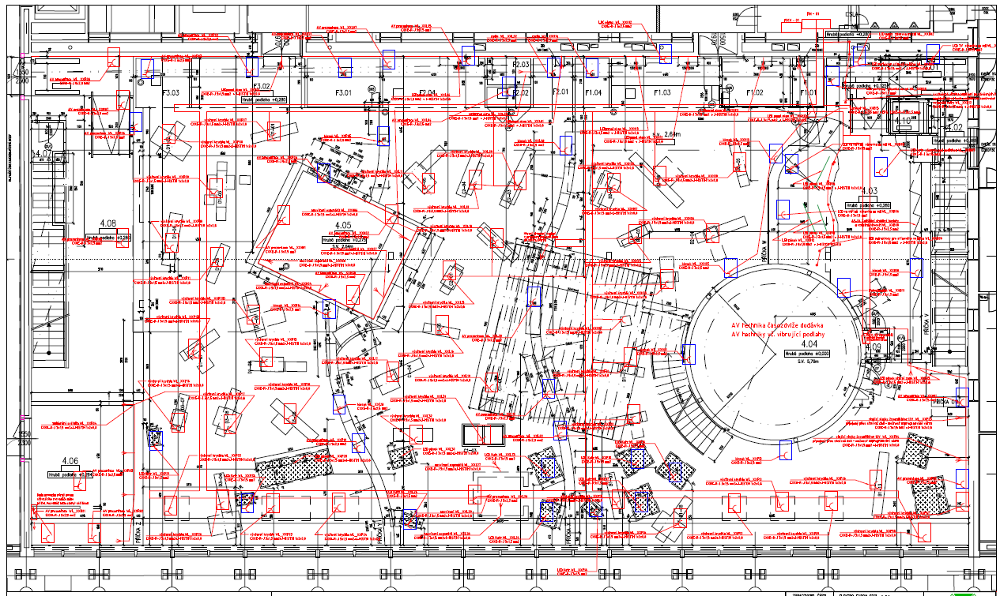

Projekce
Od jednoduché přípojky po trafostanice, průmyslové instalace a slaboproudé systémy.
Elektrotechnické projektové dokumentace zpracováváme s ohledem na rozsah činnosti montážních skupin, tj. od jednoduchých přípojek z distribuční sítě, přes projekty rodinných sídel a bungalovů, průmyslové instalace až po projekty trafostanic či venkovního i vnitřního vedení nízkého i vysokého napětí. Projektujeme i slaboproudé rozvody – kamerové systémy, protipožární a bezpečnostní systémy.
Z hlediska komplexního poskytování služeb našim zákazníkům jsme schopni zpracovat projektové dokumentace v různých stupních:
- projektová dokumentace pro územní i stavební řízení
- inž. činnost, zastupování stavebníka při správním řízení
- realizační dokumentace
- podklady pro výběr dodavatele
- zadávací dokumentace podle zákona o zadávání veřejných zakázek
- technický dozor
- technické poradenství
Kompletní přehled námi poskytovaných služeb v oblasti projektování
- projektování elektrických zařízení
- silnoproudá i slaboproudá elektroinstalace
- schémata, rozvaděče
- hromosvody, uzemnění, ochrana proti přepětí
- návrhy umělého osvětlení, optimalizace osvětlovacích soustav
- veřejné osvětlení, slavnostní osvětlení
- elektrické vytápění – přímotopné, akumulační, podlahové
- zásobování elektrickou energií – energetické bilance
- distribuční sítě NN – studie, návrhy, projektování
- elektrické přípojky – projednání, projekty, realizace
Je samozřejmostí, že zajišťujeme standardní potřebná vyjádření správců sítí a souhlas provozovatele distribuční energetické soustavy (ČEZ).

